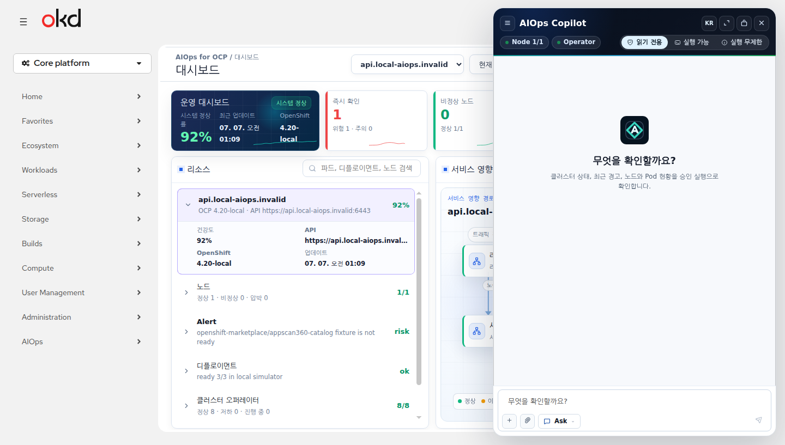
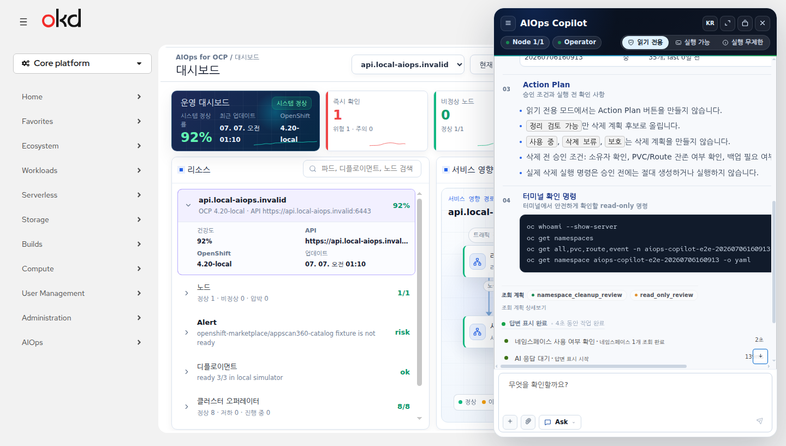

Connected OKD Safe Scenario Course
실제 OKD 연결 상태에서 AIOps Copilot의 조회, 판단, 승인, 실행, 검증 흐름을 안전하게 시연합니다.
이 테스트북은 로컬 fixture가 아니라 회사 OKD에 연결된 상태를 전제로 합니다.
모든 변경은 매번 새로 만드는 aiops-copilot-e2e-* namespace 안에서만 수행하고, cleanup은 안전 label이 모두 맞을 때만 동작합니다.
Report state NOT RUN
Namespace -
Server api.ocp.cywell.server
Screenshots 0
안전 기준: 운영/개발 namespace는 조작하지 않습니다. verifier가 허용하는 mutation은 테스트 namespace 안의
deployment/aiops-connected-scale-target scale 또는 테스트 deployment restart뿐입니다.
cd /home/kugnus/cywell/ocp-aiops_kugnus
PATH="$HOME/.nvm/versions/node/v24.14.0/bin:$PATH" node scripts/verify-v0281-connected-aiops-scenarios.cjs --setup --cleanup
bash scripts/setup-v0281-connected-aiops-sandbox.sh
# 출력된 namespace/session 확인
PATH="$HOME/.nvm/versions/node/v24.14.0/bin:$PATH" node scripts/verify-v0281-connected-aiops-scenarios.cjs --namespace aiops-copilot-e2e-YYYYMMDDHHMMSS --session YYYYMMDDHHMMSS
bash scripts/cleanup-v0281-connected-aiops-sandbox.sh --namespace aiops-copilot-e2e-YYYYMMDDHHMMSS --session YYYYMMDDHHMMSS
00
Sandbox namespace 생성 timestamp 기반 격리 namespace, quota, limitrange, 테스트 workload를 만듭니다.
PENDING
실행 명령
bash scripts/setup-v0281-connected-aiops-sandbox.sh
명령 복사
직접 볼 것

검증 실행 후 스크린샷이 표시됩니다.
증거 화면 원본 보기
01
Preflight OKD 콘솔, plugin entry, gateway health, namespace 권한을 확인합니다.
PENDING

검증 실행 후 스크린샷이 표시됩니다.
증거 화면 원본 보기
02
AIOps Copilot 열기 OKD 콘솔 우측 하단 토글에서 Copilot을 열고 연결 상태를 확인합니다.
PENDING
검증 실행 후 스크린샷이 표시됩니다.
증거 화면 원본 보기
03
Read-only 장애 진단 조회 근거와 read-only 명령만 제공하고 실행 버튼은 없어야 합니다.
PENDING
입력 질문
aiops-copilot-e2e-* namespace에서 CrashLoopBackOff와 ImagePullBackOff 상태를 실제 근거 중심으로 조회해줘.
변경은 하지 말고 read-only oc 확인 명령도 같이 정리해줘.
직접 볼 것
검증 실행 후 스크린샷이 표시됩니다.
증거 화면 원본 보기
04
실행 가능 모드 Action Plan 승인 전에는 mutation 없이 계획만 생성되어야 합니다.
PENDING
입력 질문
Deployment aiops-copilot-e2e-*/aiops-connected-scale-target 를 2개로 scale하는 실행 계획을 생성해줘.
승인 전에는 실행하지 말고, 영향/검증/롤백 조건을 포함해줘.
직접 볼 것
검증 실행 후 스크린샷이 표시됩니다.
증거 화면 원본 보기
05
승인 게이트 승인 버튼이 눌린 뒤에만 실행 버튼 또는 실행 가능 상태로 넘어갑니다.
PENDING
검증 실행 후 스크린샷이 표시됩니다.
증거 화면 원본 보기
06
승인된 실행 실행 후 변경은 test deployment scale 1→2로만 제한됩니다.
PENDING
검증 실행 후 스크린샷이 표시됩니다.
증거 화면 원본 보기
07
검증 rollout status와 ready 상태로 실행 결과를 확인합니다.
PENDING
검증 명령
oc get deploy aiops-connected-scale-target -n aiops-copilot-e2e-*
oc rollout status deployment/aiops-connected-scale-target -n aiops-copilot-e2e-*
직접 볼 것
검증 실행 후 스크린샷이 표시됩니다.
증거 화면 원본 보기
08
Cleanup safe label과 session label이 모두 맞는 namespace만 삭제합니다.
PENDING
실행 명령
bash scripts/cleanup-v0281-connected-aiops-sandbox.sh --namespace aiops-copilot-e2e-YYYYMMDDHHMMSS --session YYYYMMDDHHMMSS
직접 볼 것
검증 실행 후 스크린샷이 표시됩니다.
증거 화면 원본 보기